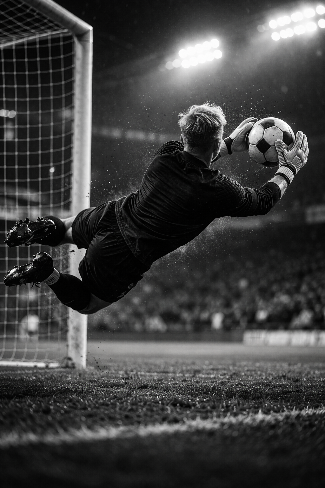

STATUT : en fuite.
FONCTION : joueur professionnel – Réal Castille.
PROFIL : star du football mondial, impliqué malgré lui dans une affaire aux ramifications internationales.
ÉVALUATION : individu sous pression. Intégré à un système qui le dépasse. Confronté à un choix coûteux, solitaire.
NIVEAU DE RISQUE : élevé.

STATUT : disparu.
FONCTION : gardien de but – Réal Castille.
PROFIL : considéré comme le futur numéro un mondial à son poste. Réputé pour son intégrité et son intelligence de jeu.
ÉVALUATION : sujet fiable. Aucune implication connue dans des activités illicites.
OBSERVATION : excellent joueur d'échecs.
STATUT : actif.
FONCTION : président du Réal Castille.
PROFIL : homme d'affaires influent, à l'origine de projets économiques majeurs liés au club.
ÉVALUATION : personnalité dominante, autoritaire. Réseau d'influence mondial.
OBSERVATION/RISQUE : implication possible dans des opérations à forts enjeux financiers.
STATUT : actif.
FONCTION : conseiller spécial du président du Réal Castille.
PROFIL : ex-footballeur star du Manchester FC, autrefois surnommé "The Emperor". Position ambiguë au sein du club.
ÉVALUATION : comportement atypique. Profil difficile à cerner.
OBSERVATION/RISQUE : aime citer Pasolini.
STATUT : sous surveillance.
FONCTION : avocat – défenseur des droits de l'homme.
PROFIL : impliqué dans plusieurs dossiers sensibles.
ÉVALUATION : déterminé, intègre, mais marginalisé.
OBSERVATION/RISQUE : surveillé de près par les autorités.